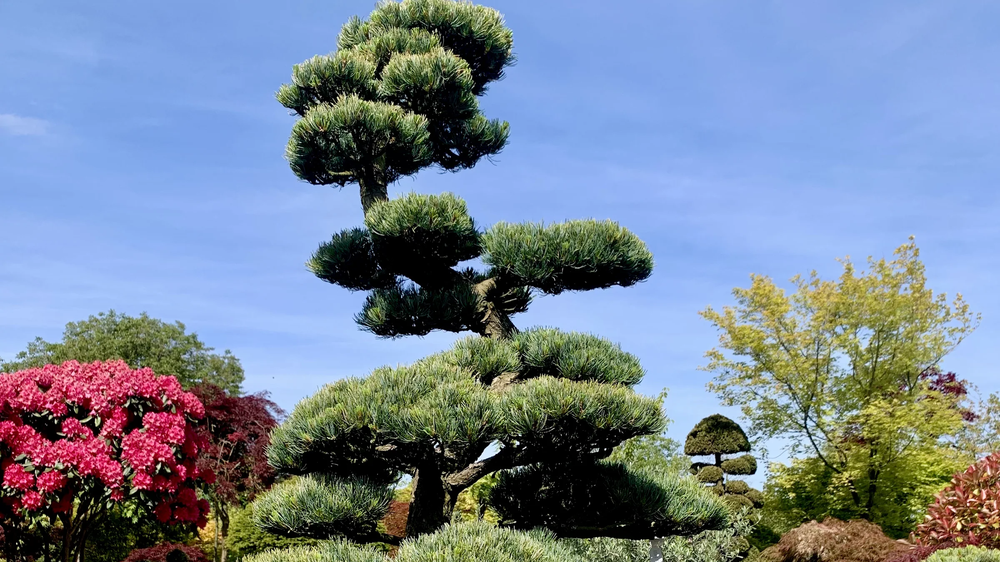

Theme Preview V1-V5.
Для Андрія/Віктора: можна перемикати дизайн-напрям без перебудови layout.
Niwaki
Садовий бонсай
Формування садових дерев: Kiefer (Pinus), Eibe (Taxus) і Wacholder (Juniperus). Крона відкривається для світла, повітря і довгої форми.
Детальніше про Niwaki
Acer palmatum
Японські клени
Japanischer Ahorn / Fächerahorn (Acer palmatum) і Schlitzahorn: сезонний ручний догляд, суха деревина, мох і грибкові ризики.
Догляд за японським кленом
Pinus & Taxus
Хвойні дерева
Kiefer (Pinus), Eibe (Taxus baccata), Wacholder (Juniperus), Tanne (Abies) і Fichte (Picea). Чистий ручний зріз.
Формування сосни та хвойнихПриклад блоку.
Ця сторінка показує токени теми: фон, поверхню, текст, основний колір, акцент, лінії, тіні і кнопки.
